你好，这里是平江
湘东北 · 幕阜山与汨罗江之间的一方宝地
平江县位于湖南省东北部，北靠幕阜山，南临连云山，汨罗江穿境而过，山环水抱、物阜民丰。 这里既是中国革命的重要策源地之一，也是诗圣杜甫长眠之地，更以"辣条之乡"闻名全国。 千年山水滋养出独特的美食、文化与习俗，本手册将带你逐一探寻。
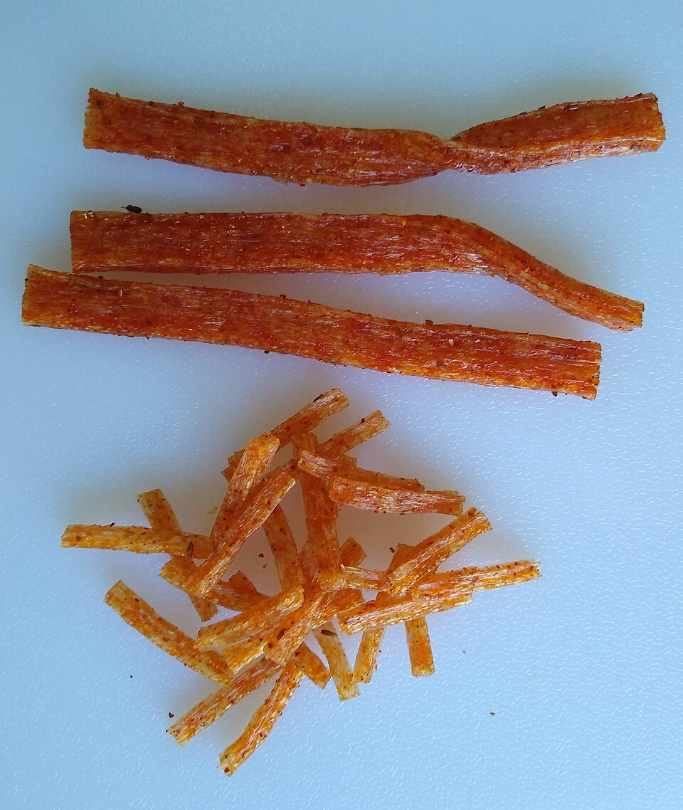

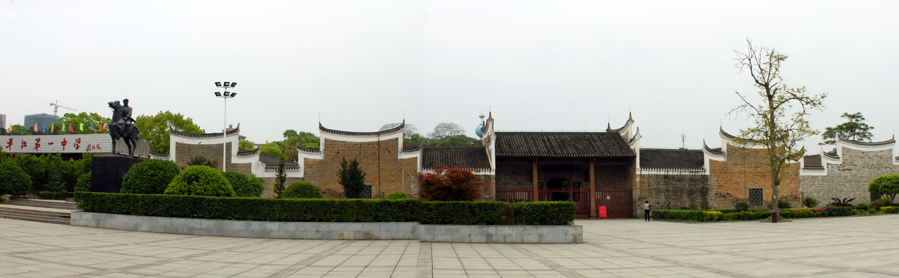
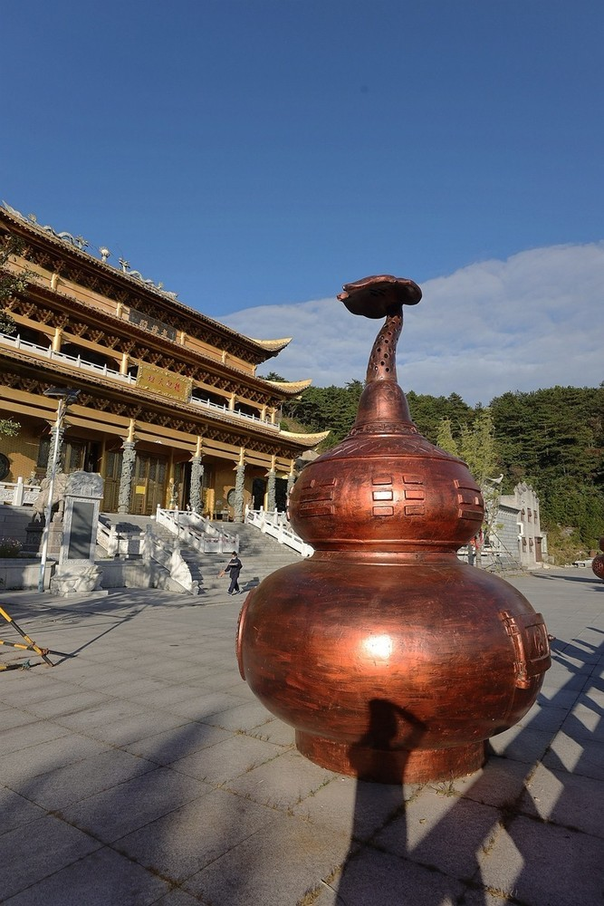

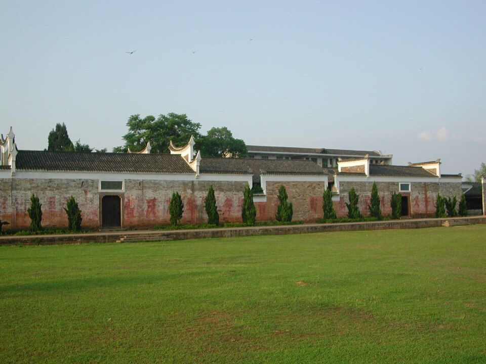
👇 点击上方导航，从 美食 开始，一路逛到 习俗，最后来挑战 互动问答 吧！
🍜 平江美食
一方水土养一方味道，辣的、香的、鲜的，都是平江味

平江辣条（面筋）
1998 年，平江人用面粉代替大豆，创造出第一根辣条。麻辣鲜香、嚼劲十足，从平江走向全国，成为一代人的童年记忆。
麻辣鲜香国民零食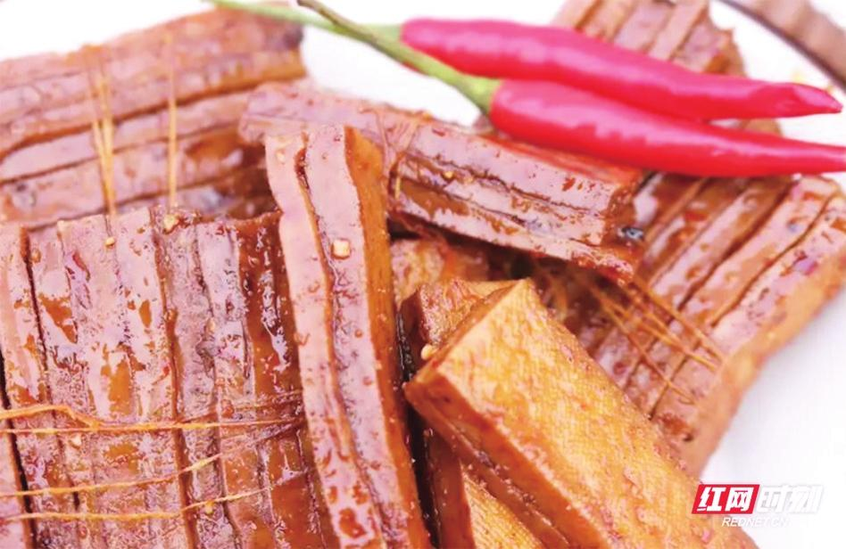
平江酱干（长寿酱干）
又称"长寿酱干"，起源久远。选用优质黄豆，配以山泉水和传统卤制工艺，卤香浓郁、嚼劲十足，佐餐下酒两相宜。
卤香浓郁嚼劲十足平江腐乳
以本地黄豆和山泉水酿制，经过发酵、裹料、封坛等多道工序，红油香辣、入口绵软，是平江人饭桌上离不开的家乡味。
红油香辣绵软下饭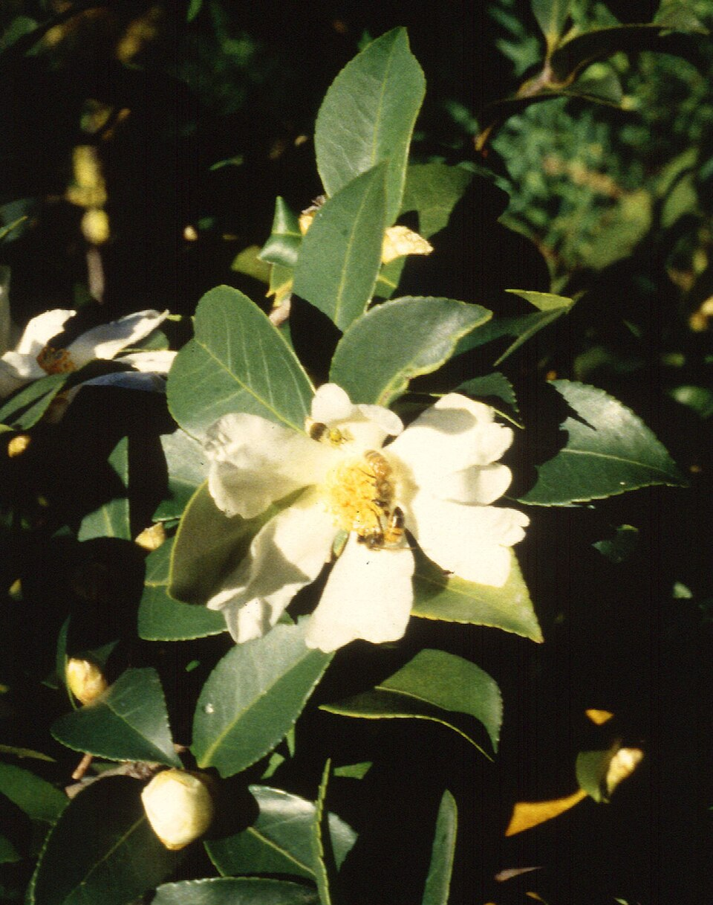
平江油茶
平江是油茶种植大县，幕阜山、连云山的油茶果榨出的山茶油清香健康、营养丰富，被誉为"液体黄金"。
清香健康山茶油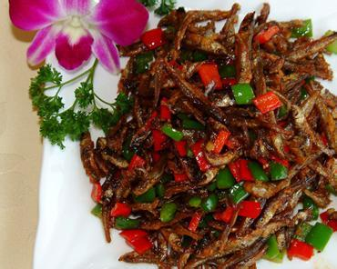
平江火焙鱼
取自平江山间溪流的小鱼，经清洗、腌制后用柴火慢焙，香酥可口、回味悠长，是平江农家待客的招牌菜。
香酥可口农家风味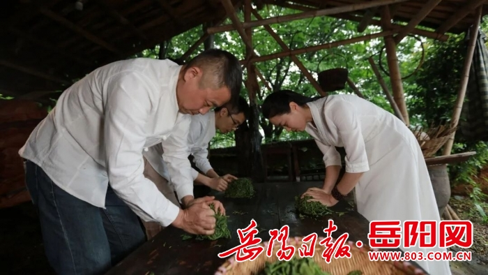
平江高山茶
幕阜山、连云山云雾缭绕、昼夜温差大，出产的高山绿茶与烟茶清香回甘，是平江人待客的"山间清味"。
高山云雾清香回甘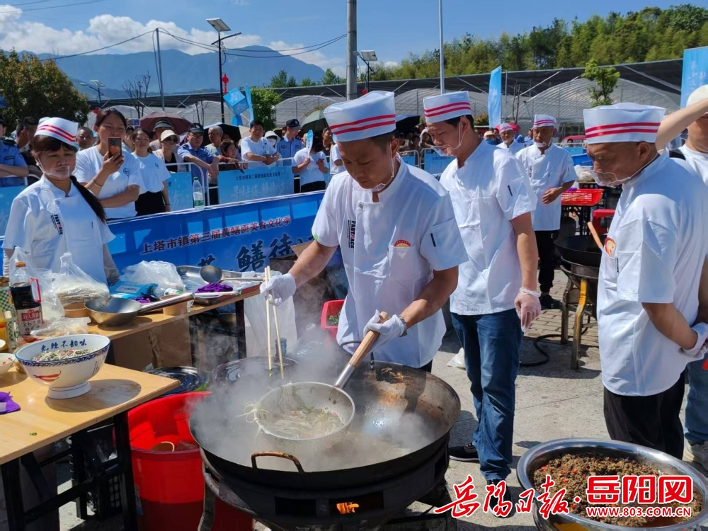
黄鳝面
平江特色面食。取新鲜黄鳝与手工面条同煮，汤汁浓郁、鳝肉鲜嫩，一碗下肚，是平江游子最想念的家乡味。
鳝鲜汤浓手工面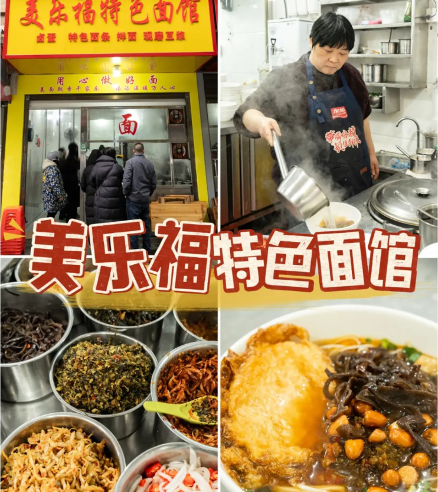
长寿腊肉面
平江长寿镇的腊肉远近闻名，肥瘦相间的腊肉配上筋道面条，咸香醇厚、回味绵长，是冬日里最暖胃的一碗。
柴火腊肉咸香暖胃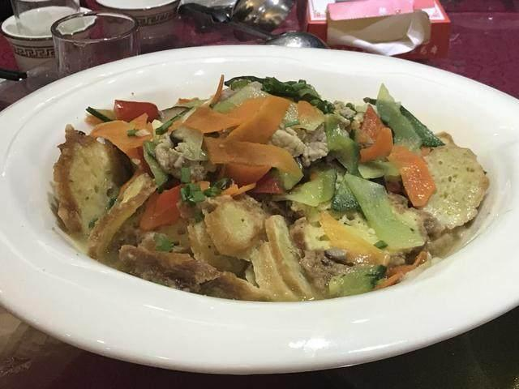
炸肉
平江十大碗中的招牌菜。五花肉裹粉油炸至金黄，外酥里嫩、肥而不腻，是节庆宴席上不可或缺的一道硬菜。
外酥里嫩宴席头菜🏛 文化瑰宝
红色的热土、诗圣的归宿、天岳的山水，都是平江的底气
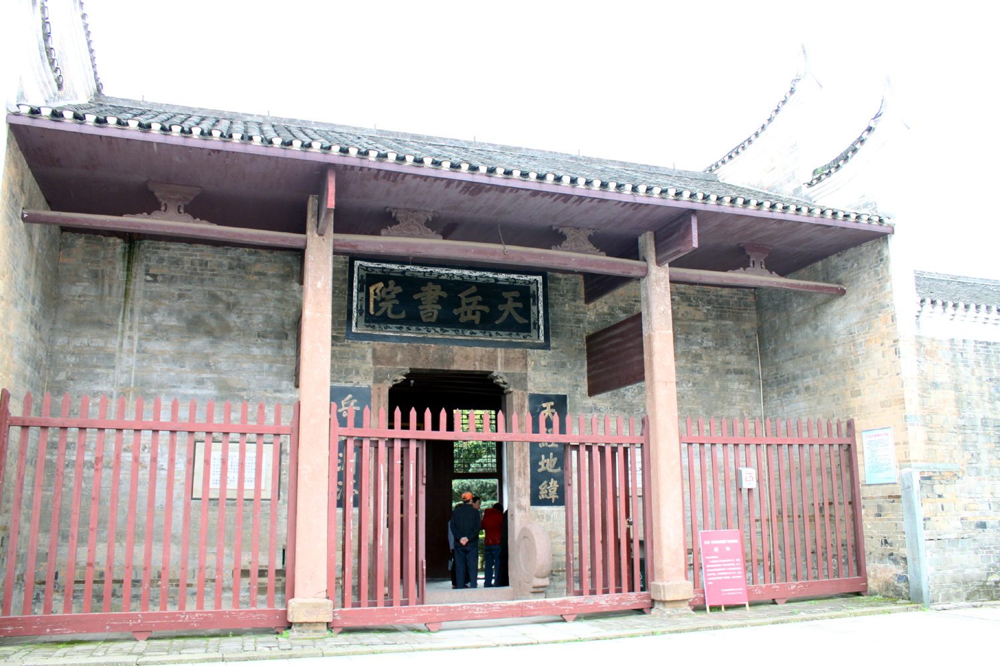
平江起义（1928）红色记忆
1928 年 7 月，彭德怀、滕代远、黄公略等在天岳书院发动平江起义，成立红五军，为中国革命作出重要贡献。平江起义旧址现为全国重点文物保护单位和纪念馆。
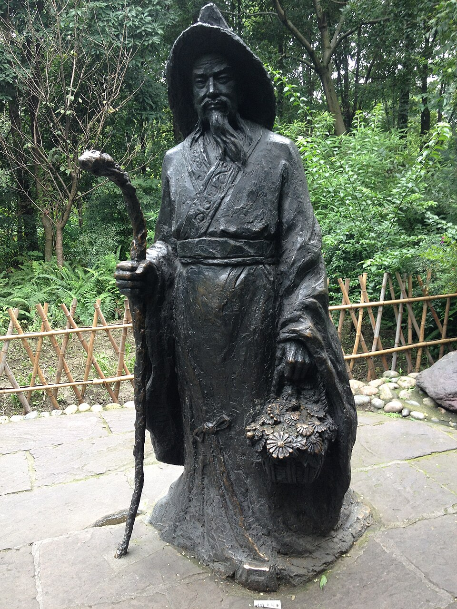
杜甫墓祠 人文圣地
诗圣杜甫晚年漂泊洞庭，病逝后长眠于平江小田。后人在此修建杜甫墓祠，历代修葺，成为人们凭吊诗圣、传承诗教的精神圣地。
幕阜山（天岳）道教名山
幕阜山古称"天岳"，是湘东北名山与道教名山，山高林密、云海日出壮观，有"五岳之外有天岳"之说，是天然的生态屏障与避暑胜地。
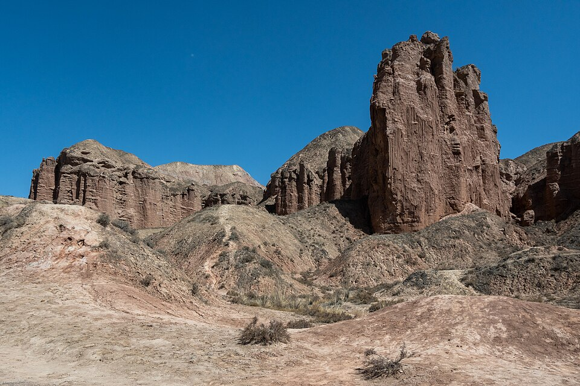
石牛寨 地质奇观
石牛寨国家地质公园以丹霞地貌闻名，赤壁丹崖、奇峰林立，高空玻璃桥悬于峡谷之上，是"地质科普 + 户外体验"的热门目的地。
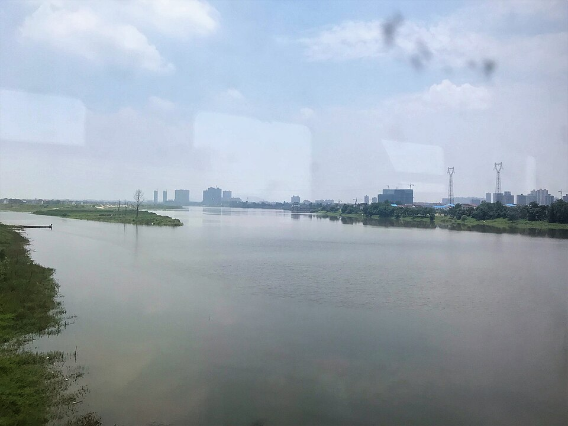
汨罗江 母亲河
汨罗江贯穿平江全境，是全县人民的母亲河。这里流传着屈原行吟的故事，是端午龙舟文化的重要发祥地之一，滋养着两岸的田园与人家。
🐉 民俗习俗
千年传承的乡音与乡情，在节日里活起来
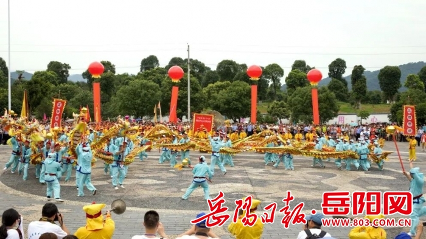
九龙舞
平江九龙舞气势恢宏，九条长龙同时舞动、变化万千，通常在元宵等喜庆节日上演，寓意风调雨顺、国泰民安，是平江最亮眼的民俗名片。
国家级非遗元宵节平江皮影戏
艺人一边操弄牛皮人偶，一边用方言唱念，在幕布后演绎忠孝节义的故事。皮影戏是平江珍贵的民间艺术，承载着几代人的童年记忆。
光影艺术民间曲艺平江灯戏（花灯）
每逢节庆，平江百姓扎花灯、唱灯戏，锣鼓喧天、载歌载舞，热闹非凡，寄托着对美好生活的期盼，是乡土味十足的民间狂欢。
花灯巡游节庆歌舞端午龙舟
汨罗江是端午龙舟文化的重要发祥地。端午时节，江上鼓声震天、龙舟竞渡，纪念屈原、祈福安康，是平江最热血的传统习俗。
龙舟竞渡纪念屈原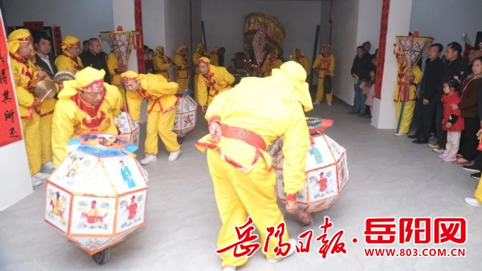
泉水推灯
泉水推灯（灯舞）发源于平江县龙门镇泉水村，2023年列入湖南省非物质文化遗产。每逢春节，人们推着花灯走家串户、祈福纳祥，场面庄严而热闹，是平江最神秘的传统灯俗之一。
传统灯俗祈福纳祥❓ 平江知多少
逛完展厅，来测测你对平江了解多少吧（共 6 题，点选项立刻看对错）
💡 查看解析
正确答案：B。1998 年辣条诞生于平江，平江因此被称为「辣条之乡」。
💡 查看解析
正确答案：C。九龙舞是平江的国家级非物质文化遗产，气势恢宏。
💡 查看解析
正确答案：A。1928 年 7 月，彭德怀、滕代远、黄公略等领导了平江起义。
💡 查看解析
正确答案：A。平江酱干又称「长寿酱干」，是国家地理标志产品。
💡 查看解析
正确答案：B。汨罗江流传着屈原行吟的故事，是端午龙舟文化的重要发祥地之一。
💡 查看解析
正确答案：B。幕阜山古称「天岳」，有「五岳之外有天岳」之说。
🎯 创作目的
为什么做这件作品？想解决什么问题、让谁受益？
一、让"平江故事"更容易被看见、被读懂
- 平江有辣条之乡、平江酱干、汨罗江、幕阜天岳、九龙舞等丰厚的乡土资源，但许多同学和外地游客只闻其名、不知其详；
- 本作品把分散的文字、图片和知识整合进一张互动网页，用"导航 + 卡片 + 问答"的形式，让人一站式、轻松地了解平江的美食、文化与习俗。
二、用数字技术传播乡土文化
- 学习并运用 HTML、CSS、JavaScript 等网页技术，把传统文化装进数字载体，实现"老故事 + 新表达"；
- 互动问答环节让观众从"被动看"变成"主动学"，加深记忆，提升科普与传播效果。
三、厚植热爱家乡的情感
- 希望通过这次创作，让更多平江青少年重新认识脚下的土地，增强文化自信与家乡认同感；
- 也欢迎外地朋友带着这份"数字手册"走进平江，尝一尝辣条酱干、看一看九龙起舞、游一游幕阜汨罗。